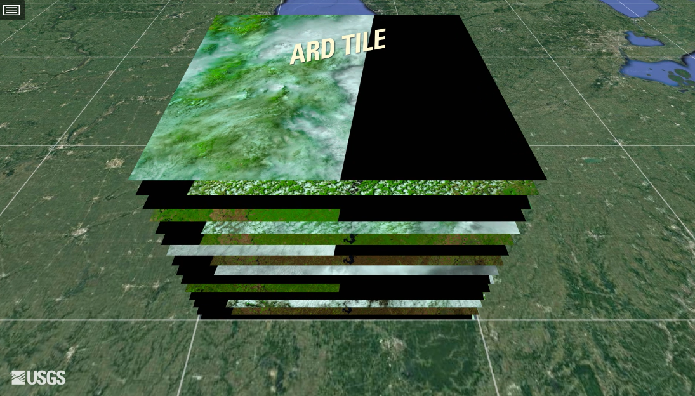

Earth observation data cubes

Analysis-ready data collections
Analysis Ready Data (CEOS-ARD) are satellite data that have been processed to meet the ARD standards defined by the Committee on Earth Observation Satellites (CEOS). ARD data simplify and accelerate the analysis of Earth observation data by providing consistent and high-quality data that are standardized across different sensors and platforms. ARD image processing includes geometric corrections, radiometric corrections, and sometimes atmospheric corrections. Images are georeferenced, meaning they are accurately aligned with a coordinate system. Optical ARD images include cloud and shadow masking information. These masks indicate which pixels are affected by clouds or cloud shadows. For optical sensors, CEOS-ARD images have to be converted to surface reflectance values, which represent the fraction of light that is reflected by the surface. This makes the data more comparable across different times and locations. For SAR images, CEOS-ARD specification require images to undergo Radiometric Terrain Correction (RTC) and be provided in the GammaNought (\(\gamma_0\)) backscatter values. This value which mitigates the variations from diverse observation geometries and is recommended for most land applications.
ARD images are available from various satellite platforms, including Landsat, Sentinel, and commercial satellites. This provides a wide range of spatial, spectral, and temporal resolutions to suit different applications. They are organized as a collection of files, where each pixel contains a single value for each spectral band for a given date. These collections are available in cloud services such as Brazil Data Cube, Digital Earth Africa, and Microsoft’s Planetary Computer. In general, the timelines of the images in an ARD collection are different. Images may still contain cloudy or missing pixels, and bands for the images in the collection may have different resolutions. Figure fig-ard-datacubes shows an example of the Landsat ARD image collection.
Regular Earth observation data cubes
A regular EO data cube is a multidimensional array—typically x (longitude), y (latitude), time, and spectral band—containing “analysis-ready” satellite observations that have already been geometrically aligned, radiometrically calibrated, and stored on a common grid. In other words, every pixel in the cube represents the same ground location over a sequence of dates, so the user can retrieve a complete, consistent time series with a single query.
Machine learning and deep learning (ML/DL) classification algorithms require the input data to be consistent. The dimensionality of the data used for training the model has to be the same as that of the data to be classified. There should be no gaps and no missing values. Thus, to use ML/DL algorithms for remote sensing data, ARD image collections should be converted to regular data cubes. Adapting a previous definition by Appel and Pebesma [1], we consider a regular data cube to have the following definition and properties:
- A regular data cube is a four-dimensional data structure with explicit dimensions x (longitude or easting), y (latitude or northing), time, and bands. The spatial, temporal, and attribute dimensions are independent and not interchangeable.
- The spatial dimensions refer to a coordinate system, such as the grids defined by UTM (Universal Transverse Mercator) or MGRS (Military Grid Reference System). A tile of the grid corresponds to a unique zone of the coordinate system. A data cube may span various tiles and UTM zones.
- The temporal dimension is a set of continuous and equally spaced intervals.
- For every combination of dimensions, a cell has a single value.
All cells of a data cube have the same spatiotemporal extent. The spatial resolution of each cell is the same in the X and Y dimensions. All temporal intervals are the same. Each cell contains a valid set of measures. Each pixel is associated with a unique coordinate in a zone of the coordinate system. For each position in space, the data cube should provide a set of valid time series. For each time interval, the regular data cube should provide a valid 2D image (see Figure Figure fig-dc-datacubes).

Currently, the only cloud service that provides regular data cubes by default is the Brazil Data Cube (BDC). ARD collections available in other cloud services are not regular in space and time. Bands may have different resolutions, images may not cover the entire timeline, and time intervals may be irregular. For this reason, subsets of these collections need to be converted into regular data cubes before further processing. To produce data cubes for machine learning data analysis, this part of the book describes the steps involved in producing and using regular data cubes:
- Obtaining data from ARD image collections
- Producing regular data cubes from single- and multi-source data
- Recovering data cubes from local files
- Performing operations on data cubes
References
[1]
M. Appel and E. Pebesma, “On-Demand Processing of Data Cubes from Satellite Image Collections with the gdalcubes Library,” Data, vol. 4, no. 3, 2019, doi: 10.3390/data4030092.